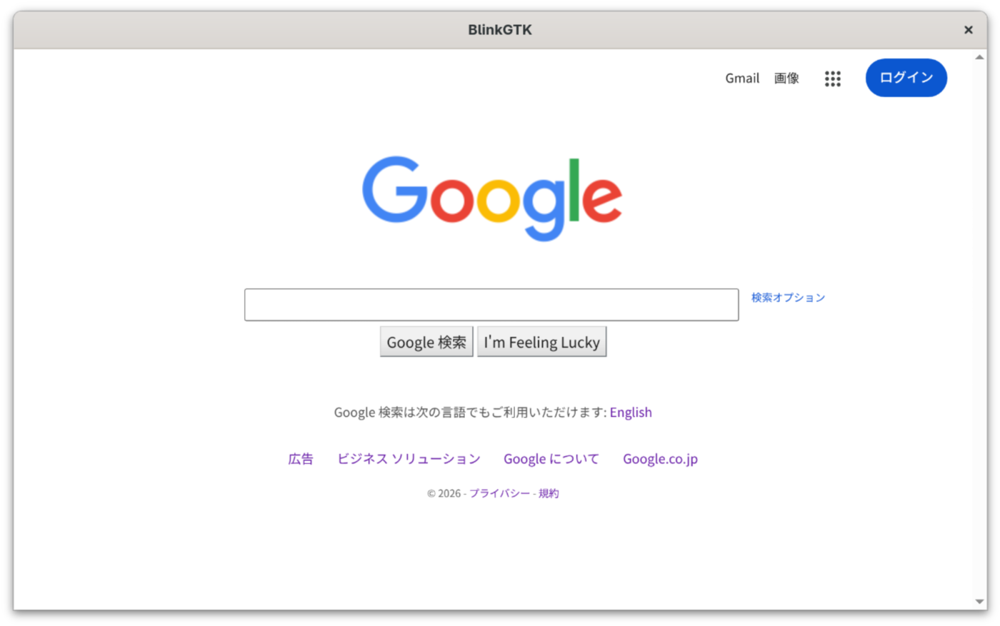

Documentation
BlinkGTK v1.2.0-build6 の配布物に同梱されているドキュメントです。
記載されている API が同梱バイナリに実在することを機械検証しています。The documentation bundled with BlinkGTK v1.2.0-build6 .
Every API named here is mechanically verified to exist in the bundled binary.
はじめる / Get started
まだ動かしていない人はここから。上から順に読めば最初の 1 本が動きます。New here? Read top to bottom and your first app will run.
BlinkGTK は何に使えるか / What BlinkGTK is for 日本語 · English 最初のアプリをビルドして動かす / Build and run your first app 日本語 · English パッケージのインストール / Install the packages INSTALL インストールガイド (詳細) / Installation guide (detailed) 日本語 · English BlinkGTK とは / What is BlinkGTK README
作る — やりたいことから / Build — by task
自分のアプリに組み込む / Integrate into your application 日本語 · English WebKitGTK のアプリを移行する / Migrate a WebKitGTK application 日本語 · English 独自 URL スキームでアプリ内コンテンツを配信する / Serve app content over a custom URL scheme 日本語 · English ページの JavaScript と C でメッセージをやり取りする / Exchange messages between page JS and C 日本語 · English ダイアログ・ファイル選択・ダウンロードを自前 UI にする / Provide your own dialogs, file choosers and downloads 日本語 · English ページ内検索とズームを付ける / Add in-page search and zoom 日本語 · English Chrome DevTools でデバッグする / Debug with Chrome DevTools 日本語 · English チュートリアル: イベント処理 (C) / Tutorial: events (C) 日本語 · English チュートリアル: 設定 (C) / Tutorial: settings (C) 日本語 · English Python で作る / Build in Python 日本語 · English チュートリアル: イベント処理 (Python) / Tutorial: events (Python) 日本語 · English チュートリアル: 設定 (Python) / Tutorial: settings (Python) 日本語 · English Rust で作る / Build in Rust 日本語 · English ポータブルアプリとして配布する / Ship as a portable application 日本語 · English デスクトップに置く — アイコン・アプリ一覧・ソフトウェアセンター / Put it on the desktop 日本語 · English
困ったとき / When things go wrong
症状から探す — 画面が出ない・起動しない・様子がおかしい / Look it up by symptom 日本語 · English 謝辞 — 外部からのご報告で直ったもの / Acknowledgements 日本語 · English よくあるご質問 / Frequently asked questions 日本語 · English
リファレンス / Reference
逆引き — 目的から関数を探す / How do I…? — find the function by goal 日本語 · English API 目次 / API index 日本語 · English BlinkWebView ウィジェット / The BlinkWebView widget 日本語 · English ナビゲーション / Navigation 日本語 · English 設定・GPU モード・コンテンツ保護 / Settings, GPU modes, content protection 日本語 · English シグナル / Signals 日本語 · English C API (全関数索引つき) / C API (with complete function index) 日本語 · English 環境変数 / Environment variables 日本語 · English リリースノート / Release notes 日本語 · English
サンプル / Examples
配布物の examples/ に同梱されています。make でそのままビルドできます。Bundled in examples/. They build as-is with make.

同梱の blinkgtk_browser.c を make でビルドして実行したところ
(Fedora 44 / Wayland)。The bundled blinkgtk_browser.c, built with make and
run on Fedora 44 under Wayland.
深く知る / In depth
エンジン比較 — WebKitGTK・CEF との違い / Engine comparison — vs WebKitGTK and CEF 日本語 · English Chromium 147 → 151 — BlinkGTK に何が増えたか / What BlinkGTK gained 日本語 · English 改版履歴 — BlinkGTK の版と Chromium の版 / Version history 日本語 · English
アーキテクチャ概説は起草中です。An architecture overview is being drafted.